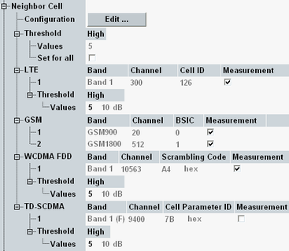
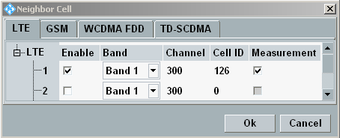

This section defines neighbor cell information to be broadcast to the MS. For each radio access technology, you can define several neighbor cell entries. The signaling messages for broadcast of neighbor cell information are defined in 3GPP TS 44.018.

The column "Measurement" is only configurable for enabled entries. It specifies whether measurement reports for the neighbor cell have to be sent by the MS. Received reports are displayed in the main view, see "Neighbor Cells".
The individual neighbor cell settings are described below.

To configure the neighbor cell entries, press the "Edit" button. The configuration dialog contains one tab per technology. Only the enabled entries are broadcast.
The configured "High" reselection threshold value is broadcast in the BCCH. For GSM cell selection reselection, the MS measures all channels within its bands (refer to 3GPP 45.008). For the UTRAN and/or E-UTRAN neighbor cells, the SI 2quater "Rest Octets" information element contains neighbor cell lists and carries THRESH_UTRAN_high/THRESH_E-UTRAN_high defined in 3GPP TS 44.018.
The resulting threshold value in dB is displayed for information.
You can define an individual threshold per technology or a common threshold applicable to all technologies. To apply common thresholds, enable "Threshold" > "Set for all". Disable it to apply the individual thresholds.
Remote command:For an LTE neighbor cell entry, you can specify the operating band, the downlink channel number and the cell ID. Up to four LTE neighbor cells are possible.
Remote command:For a GSM neighbor cell entry, you can specify the operating band, the channel number used for the BCCH and the BSIC. The combination of the channel number and BSIC must be unique within the configuration. Up to 16 neighbor cells are possible.
Remote command:For a WCDMA neighbor cell entry, you can specify the operating band, the downlink channel number and the primary scrambling code of the cell. Up to four WCDMA neighbor cells are possible.
Remote command:For a TD-SCDMA neighbor cell entry, you can specify the operating band, the channel number and the scrambling code of the cell. Up to four TD-SCDMA neighbor cells are possible.
Remote command: